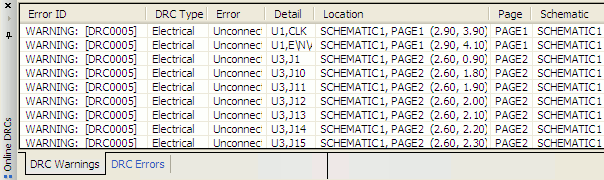

After you run the design rule check at least once on a design, you can then use the Check and Save command. This command executes the Design Rules Check on the current set of design rules that you define in the Design Rules Check dialog box.
To run the Check and Save command
- Click the File menu.
-
Choose the Check and Save option.
The Online DRCs window displays two tabs with the listings of the DRC errors and warnings generated from the DRC check.

- Double-click on a error or warning in the listings to go to the DRC marker on the specific schematic page.
|
|
You need to setup and run the design rules check at least once before using the Check and Save command. |